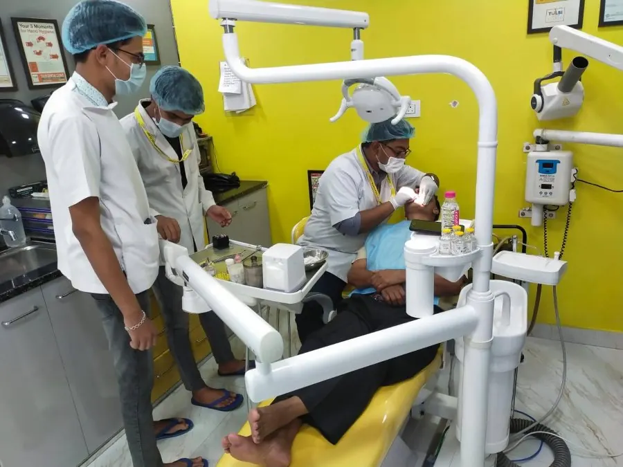

- Home
- Treatments
- Wisdom tooth removal
Wisdom tooth removal in Ajmer
Wisdom teeth that are stuck under the gum or growing at an angle can cause pain, swelling and infection. Removing them is a routine procedure done at the clinic under local anaesthetic.

Is this for me?
You may need this treatment if you have:
- Pain or pressure at the back of the jaw
- A swollen, tender gum behind your last tooth
- Difficulty opening your mouth fully
- Food getting trapped behind your back teeth
Only an examination, and an X-ray where needed, can confirm it. We have X-rays at the clinic.
What happens
- Examination and X-rayTo see the position of the tooth and its roots.
- NumbingLocal anaesthetic numbs the area completely.
- RemovalThe tooth is removed, sometimes in sections to protect the bone.
- Stitches, if neededDissolving stitches help the gum heal.
- ReviewA quick check about a week later.
Comfort and recovery
You will feel pressure but not pain during the procedure. Swelling usually peaks on day two and settles within a week. Eat soft, cool food and avoid smoking, straws and hot drinks for 24 to 48 hours.
Cost
| Wisdom tooth removal, impacted | from ₹3,000 |
| Simple extraction | from ₹500 |
Final cost depends on your tooth and is confirmed before treatment. Scheme members: covered parts are cashless. Full price list
Who treats you
Page reviewed by the Tulsi Dental Clinic dental team, November 2026.
Wisdom tooth removal: common questions
How long is recovery?
Most people feel much better within three to five days. Swelling is usually worst on the second day.
What should I eat afterwards?
Soft, cool food such as curd, khichdi and dal for a few days. Avoid very hot food and drinks for the first day.
Do all wisdom teeth need removing?
No. Only those causing problems, or likely to, need to come out.
Related treatments
Oral surgery
Surgical extractions and implant procedures, planned and explained in advance.
From ₹2,000, scheme coveredCheck-up and cleaning
Examination, scaling, X-rays and treatment for bad breath.
From ₹200, scheme coveredDental implants
A titanium root in the jaw that holds a natural-looking replacement tooth.
From ₹25,000In pain or unsure? We will find you a slot.
Booking is free. We confirm your slot on WhatsApp within 30 minutes during clinic hours.